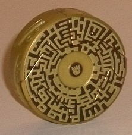
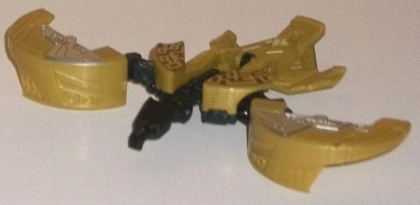
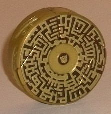
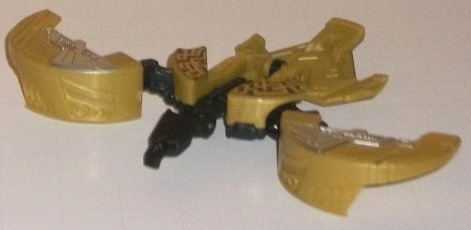
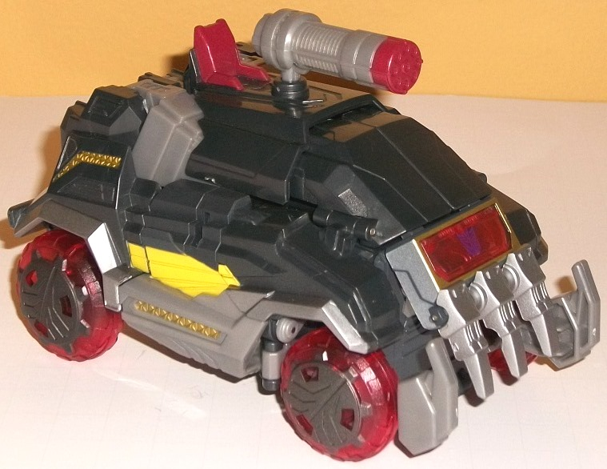
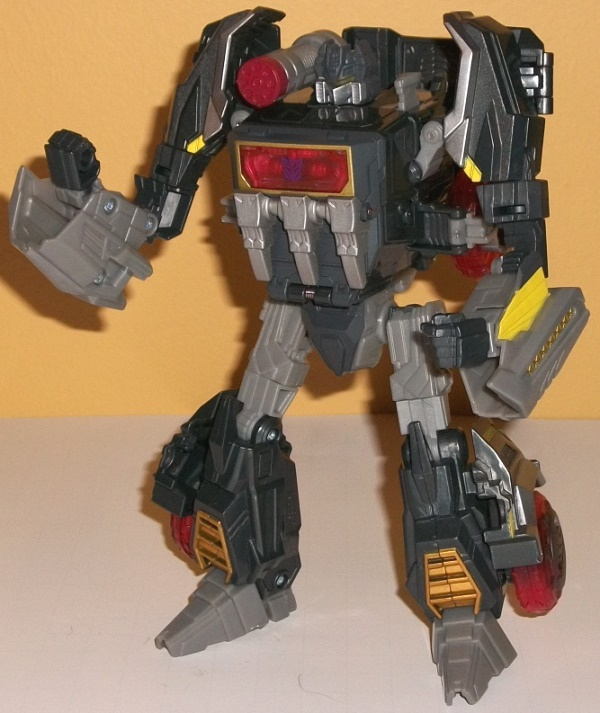

 
Allegiance : Decepticon
Size : Legends/Legion
Difficulty of Transformation : Very Easy
Color Scheme : Milky dull greenish gold, black, metallic gold, and some silver and dark brown
Individual Rating : 7.6
(NOTE: Because this set is a repaint, this
is not a full-blown review. This mainly covers any changes made to the
set and the color scheme, and merely compares it to FoC Soundwave w/ Laserbeak.
For a review on the mold itself, read the review of FoC Soundwave w/ Laserbeak
here
.)
 Buzzsaw
Buzzsaw


Allegiance
: Decepticon
Size
: Legends/Legion
Difficulty of Transformation
: Very
Easy
Color Scheme
: Milky dull greenish
gold, black, metallic gold, and some silver and dark brown
Individual Rating
: 7.6
Buzzsaw-- as is traditional
for him-- gets the same black parts as Laserbeak did (namely, the bird
mode inner wings, head, back, and bottom), but the main plastic color has
been changed from Laserbeak's red to a greenish gold plastic. I wish the
gold were a bit "purer" shade of the color-- more bronzish, perhaps-- but
it still looks fairly good, and the milky sheen to it works well with Buzzsaw's
other colors and paint apps. The "circuitry lines" on the top of Buzzsaw's
disc mode have a pretty cool pattern-- metallic gold mixed with a dark
brown, and they both give off a pretty nice contrast against each other
and are a nice effect, even if some other data disc minions have even more
eye-catching paint apps on the tops of their disc modes. More visible in
bird mode, Buzzsaw has the same exact silver paint apps on his wings as
Laserbeak, which help to give him a bit more color variety. Unfortunately,
ALSO like Laserbeak, his bird eyes aren't painted, which is a detail that
I really think should not have been overlooked.
No mold changes have
been made to FoC Buzzsaw.
 Soundblaster
Soundblaster


Allegiance
: Decepticon
Size
: Voyager
Difficulty of Transformation
: Medium
Color Scheme
: Milky charcoal black,
moderately light milky gray, and some transparent cherry red, light yellow,
metallic gold, metallic bronze, silver, dark metallic gunmetal gray, translucent
yellow, and dark metallic red
Individual Rating
: 9.1
It's rare that a redeco
of a mold will be released in the same wave as that mold's initial release,
but Soundblaster is that mold, released in the same exact wave as FoC Soundwave
w/ Laserbeak. However, Soundwave came 3 to a case of 4, leaving Soundblaster
here the shortpacked one-- which is understandable. Even though they're
technically the same character, Soundwave has waaay more name recognition.
Anyways, unlike most redecoes these days, Soundblaster shares all the same
paint apps-- paint "masks"-- as Soundwave. I would've preferred a bit more
variety, but that still doesn't mean Soundblaster looks too same-ish. As
opposed to a dark blue, Soundblaster's color is a milky charcoal, "impure"
black, which honestly looks a bit better as a main color on this toy than
a "straight" black would've, in my opinion. The milky gray pieces are still
the exact same shade and in the exact same place as they were on Soundwave,
so no surprises here. Unfortunately, because Soundblaster's main color
is also monochrome, it makes the color scheme look a bit more one-tone
than it does on Soundwave. Besides the use of silver on the front/chest
"claws" and a few other places, as well as the dark metallic gunmetal on
the wheel hubcaps, Soundblaster has a lot of paint apps that do give him
some color variety outside of the monochrome scale. The most stand-out
color is the rather bright shade of yellow on the sides of the vehicle
mode/lower arms, which really looks striking against the black; I wish
it had been used a little more. There's also a fair amount of red, both
in terms of the transparent plastic (which is a nice "cherry" shade here)
and in terms of a solid, semi-metallic shade of the color used on a few
places like the tip of Soundblaster's cannon and vehicle mode chair, which
fits in pretty well with said transparent plastic in terms of its overall
tone. There's also a fair amount of gold and bronze on the legs, sides
of the lower arms, and on the chest, which pretty much always looks good
on any TF. Soundblaster's visor in robot mode has a rather interesting
shade of translucent yellow that is quite eye-catching, and makes for great
light piping as well.
No mold changes have
been made to FoC Soundblaster.
FoC Soundblaster w/ Buzzsaw
is a pair of great molds, though the target crowd for this release (Soundblaster
in particular) is a bit more niche and short-packed than Soundwave, so
be prepared to spend a bit more for this version unless you got lucky and
found it physically in stores. Buzzsaw-- due to his gold plastic-- looks
a little bit better than Laserbeak overall, but I think Soundblaster's
usage of charcoal black over Soundwave's dark blue is a bit of a step down
in terms of colors, leaving Soundblaster looking a bit more monochrome
(even if he has some spiffy paint apps to help alleviate that a bit). Recommended
for completists, big fans of the FoC data disc gimmick, or those who want
to be able to store all their Decepticon FoC disc-Cons at once. (If you
have both Soundwave and Soundblaster in robot mode, they can store 3 each--
and since there's 6 Decepticon data disc TFs total, there you go.) Otherwise,
you're probably better off sticking with the more visually interesting,
mainstream, and easier-to-find Soundwave version of this mold.
Reviews by Beastbot